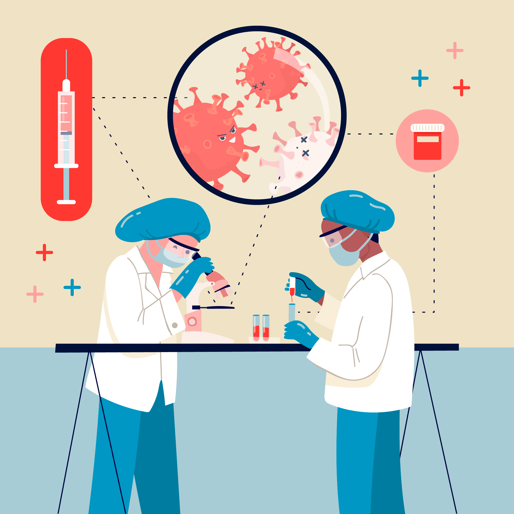

Pathology
Accurate, Convenient & Hassle-Free Lab Testing at Home
Lab Tests from the Comfort of Your Home
Book a Blood Test at Home with HealWell for swift and hassle-free sample collection by certified professionals, without needing to step out.

Understanding Blood Tests
Blood tests play a vital role in preventive healthcare and diagnosis. They help doctors detect illnesses, monitor chronic conditions, and assess how well treatments are working—often before symptoms appear.
With HealWell, you can skip the hospital trip. Our trained professionals collect samples at your home, process them at accredited labs, and deliver reports digitally—ensuring seamless, accurate, and convenient testing.
What Blood Tests Measure
Different blood tests measure health parameters like:
- Blood cell counts (detect anaemia or infections)
- Enzyme & hormone levels (check liver, kidney, thyroid function)
- Metabolic indicators (sugar, cholesterol, vitamins, minerals)
- Track progress of chronic diseases or effectiveness of medications

Popular Blood Tests
-
Complete Blood Count (CBC)
A comprehensive overview of red and white blood cells, haemoglobin, platelets, and more. This test helps detect anaemia, infections, and various blood disorders.
-
Blood Sugar Tests
Includes fasting glucose, postprandial blood sugar, and HbA1c levels—vital for diagnosing and managing diabetes or prediabetes. HbA1c offers insights into long-term blood sugar control.
-
Liver Function Tests (LFTs)
Measures enzymes and proteins such as ALT, AST, ALP, bilirubin, and albumin to assess liver health. Recommended in cases of suspected liver damage or during long-term medication use.
-
Kidney Function Tests
Tests such as creatinine, urea, and electrolytes help evaluate how well your kidneys are functioning. These are particularly important for individuals with diabetes, hypertension, or existing kidney conditions.
-
Thyroid Function Tests
Includes TSH, Free T3, and Free T4 to detect hypo- or hyperthyroidism. Imbalances can affect energy, metabolism, weight, and mood.
-
Lipid Profile
Measures cholesterol types and triglycerides to assess cardiovascular risk. Often part of routine screenings, especially for those with lifestyle risks or family history of heart disease.
-
Vitamin and Mineral Tests Detects deficiencies in key nutrients like Vitamin D, B12, iron, and calcium—often linked to fatigue, weakened immunity, or bone health issues.
Hormone Tests
Used to evaluate reproductive and metabolic hormones such as estrogen, testosterone, cortisol, and prolactin. Recommended for irregular periods, fertility concerns, or unexplained fatigue.
Infection and Immunity Tests
Tests such as CRP, ESR, and antibody panels help detect infections and monitor immune response or inflammation—often used in diagnosing autoimmune diseases or unexplained fevers.
Allergy Tests
Identifies triggers behind symptoms like sneezing, rashes, or breathing issues. Tests detect reactions to allergens like pollen, food, pet dander, or dust, enabling targeted allergy management.
Why Choose HealWell for Blood Tests?
-
Home Sample Collection
Enjoy the convenience of professional blood sample collection at home—ideal for seniors, bedridden patients, or anyone with mobility concerns.
-
Simple Booking & Flexible Time Slots
Book online or via phone with the option to select your preferred date and time—making health testing easy to fit into your schedule.
-
Safe & Hygienic Sample Collection
Our certified phlebotomists follow strict hygiene and safety protocols to ensure a comfortable and secure experience at your home.
-
Timely Reports from Certified Labs
Samples are processed at accredited labs, with results typically available within 24–48 hours. Reports are delivered digitally for easy access and sharing.
-
Ideal for Regular Monitoring
Perfect for those managing chronic illnesses, undergoing recovery, or requiring routine health check-ups without frequent clinic visits.
Frequently Asked Questions
How should I prepare for a blood test?
Some tests (like fasting glucose or cholesterol) may require 8–12 hrs of fasting. Our team informs you in advance if preparation is needed.
Is a blood test painful?
Usually just mild discomfort–a quick pinch when the needle is inserted. It passes quickly.
When will I get my results?
Most results are shared digitally within 24–48 hours.
What if I don’t understand my results?
We recommend discussing results with a doctor who can explain implications and next steps.
Are at-home tests reliable?
Yes, all samples are tested in accredited labs following strict protocols, ensuring accuracy equivalent to hospital labs.
Can I book multiple tests in one visit?
Yes. Multiple tests like CBC, thyroid, and sugar can be collected in one visit for efficiency.
Can I take the test while on medication?
Usually yes, but some medicines affect results. Inform your doctor and phlebotomist so they guide correctly.